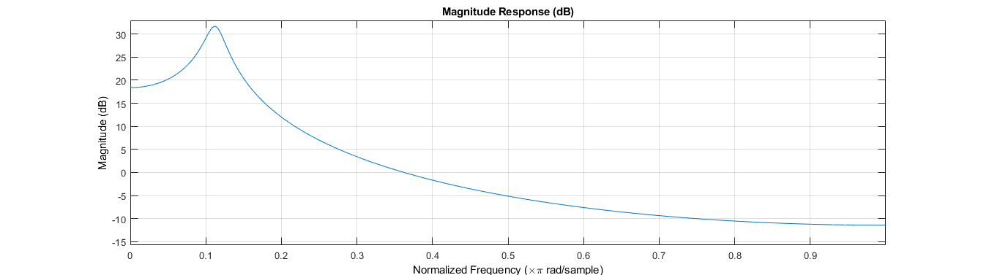
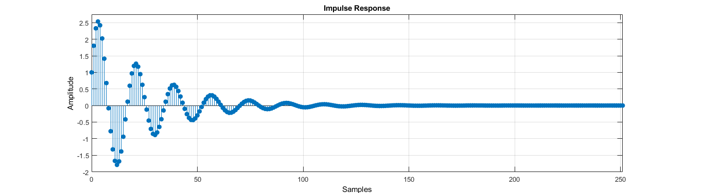
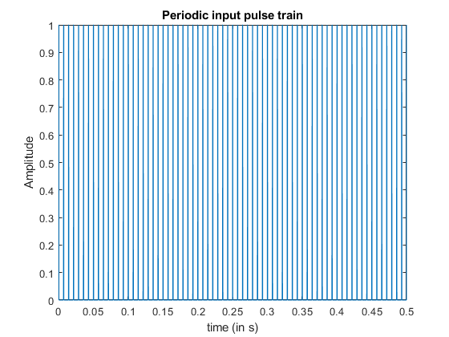
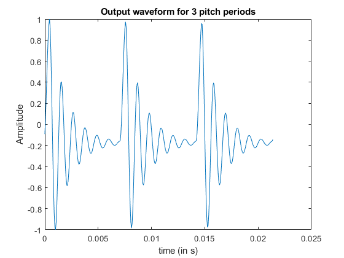
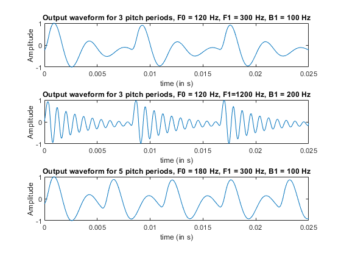

Contents
FILES OVERVIEW
%This is the main file wherein each cell runs each (sub)question. The %function files "f1_out.m" and "f2_out.m" are used. All descriptions and %observations are written as comments. All codes files and figures are %published (in html folder). The audio files are saved in "audio" folder.
Q1
fs = 16e3; b1 = 200; f1 = 900; f0 = 140; [nz, dz, s_n, y] = f1_out(f0, f1, b1, fs, "Q2"); %calculates the frequency response and the signal output to %a pulse train for a single formant fvtool(nz,dz) %magnitude response fvtool(nz,dz,'Analysis','impulse'); %filter response %H_dtft(w) = H(exp(1j*w)); 
Q2
%s_n: Source input signal t = 0:1/fs:0.5; figure(1), plot(t,s_n); xlabel('time (in s)'); ylabel('Amplitude'); title('Periodic input pulse train'); t1 = 0:1/fs:3/f0; %y : Output signal figure(2), plot(t1, y(1:length(t1))); xlabel('time (in s)'); ylabel('Amplitude'); title('Output waveform for 3 pitch periods'); %The same impulse response (found in Q1) is repeated %periodically with period f0. This happends because impulse train is %convolved with the filter response, which results in shifted outputs %around each input impulse locations. %sound_observation %Sound heard is realised to be of constant pitch. 
Q3(a)
f0 = 120; f1 = 300; b1 = 100; [~, ~, ~, y] = f1_out(f0, f1, b1, fs, "Q3a"); figure(3), subplot(3,1,1) t1 = 0:1/fs:3/f0; plot(t1, y(1:length(t1))); xlabel('time (in s)'); ylabel('Amplitude'); title('Output waveform for 3 pitch periods, F0 = 120 Hz, F1 = 300 Hz, B1 = 100 Hz'); %The oscillation frequency is lower compared to before. Same reason as before %for the nature of waveform. %sound_observation: %The sound frequency has decreased from before.
Q3(b)
f0 = 120; f1 = 1200; b1 = 100; [~, ~, ~, y] = f1_out(f0, f1, b1, fs, "Q3b"); subplot(3,1,2) t1 = 0:1/fs:3/f0; plot(t1, y(1:length(t1))); xlabel('time (in s)'); ylabel('Amplitude'); title('Output waveform for 3 pitch periods, F0 = 120 Hz, F1=1200 Hz, B1 = 200 Hz'); %The Oscillation frequency is quite high compared to previous cases. This %is because of higher value of F1. The pitch remains same as before and %hence, the impulse response is repeated with same period. %sound_observation: %The frequency heard has also increased compared to previous two cases.
Q3(c)
f0 = 180; f1 = 300; b1 = 100; [~, ~, ~, y] = f1_out(f0, f1, b1, fs, "Q3c"); subplot(3,1,3) %t1 = 0:1/fs:3/f0; plot(t1, y(1:length(t1))); xlabel('time (in s)'); ylabel('Amplitude'); title('Output waveform for 5 pitch periods, F0 = 180 Hz, F1 = 300 Hz, B1 = 100 Hz'); %The pitch frequency can clearly be seen to have increased and hence more %impulse responses are observed within same time lengths. Time-domain %alaising is taking place, where adjacent impulse response signals are %getting added and hence is different as compared to 3(a). %sound_observation: %When compared with 3(a), the increase in pitch can be clearly heard.
Q4 low pitch, /a/
Sounds are produced in "f2_out.m" function and audio files are stored!!
f2_out(120, [730, 1090, 2440], 100, 16e3, "a_lp");
Q4 high pitch, /a/
f2_out(220, [730, 1090, 2440], 100, 16e3, 'a_hp');
Q4 low pitch, /i/
f2_out(120, [270, 2290, 3010], 100, 16e3, 'i_lp');
Q4 high pitch, /i/
f2_out(220, [270, 2290, 3010], 100, 16e3, 'i_hp');
Q4 low pitch, /u/
f2_out(120,[300, 870, 2240], 100, 16e3, 'u_lp');
Q4 high pitch, /u/
f2_out(220,[300, 870, 2240], 100, 16e3, 'u_hp');